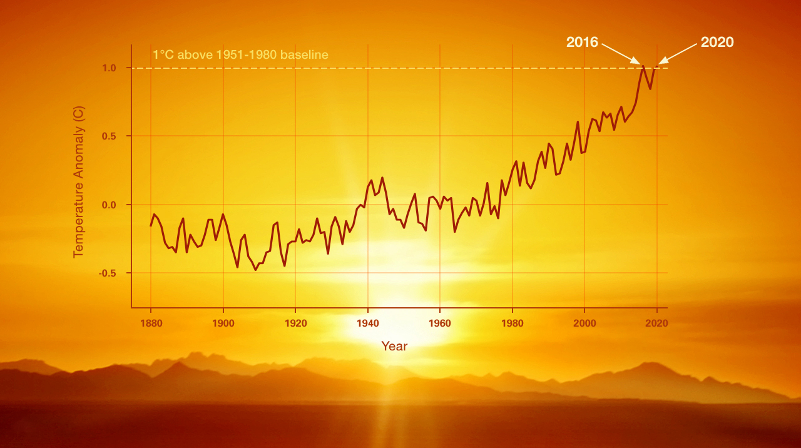
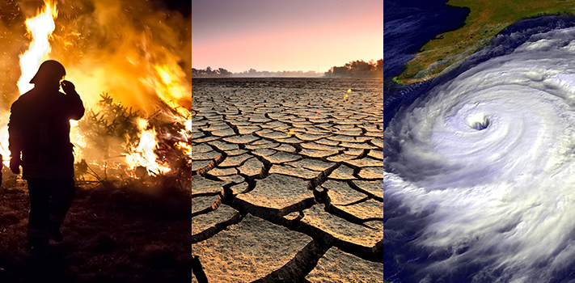
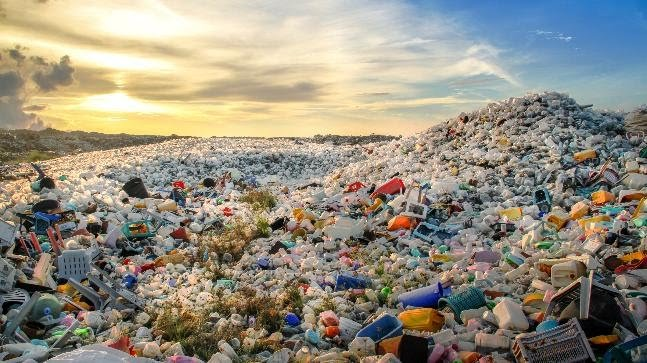
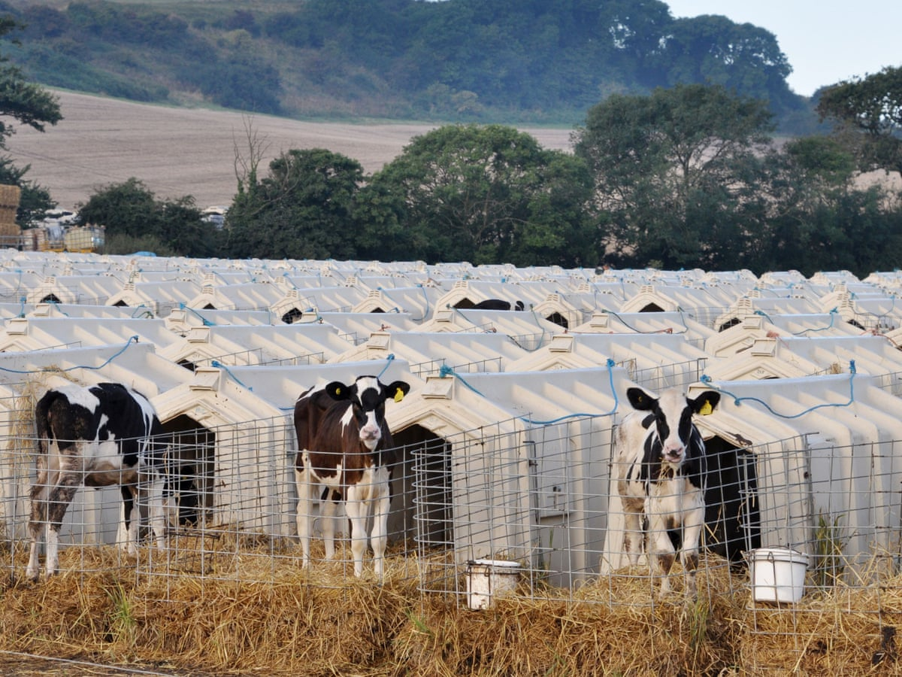
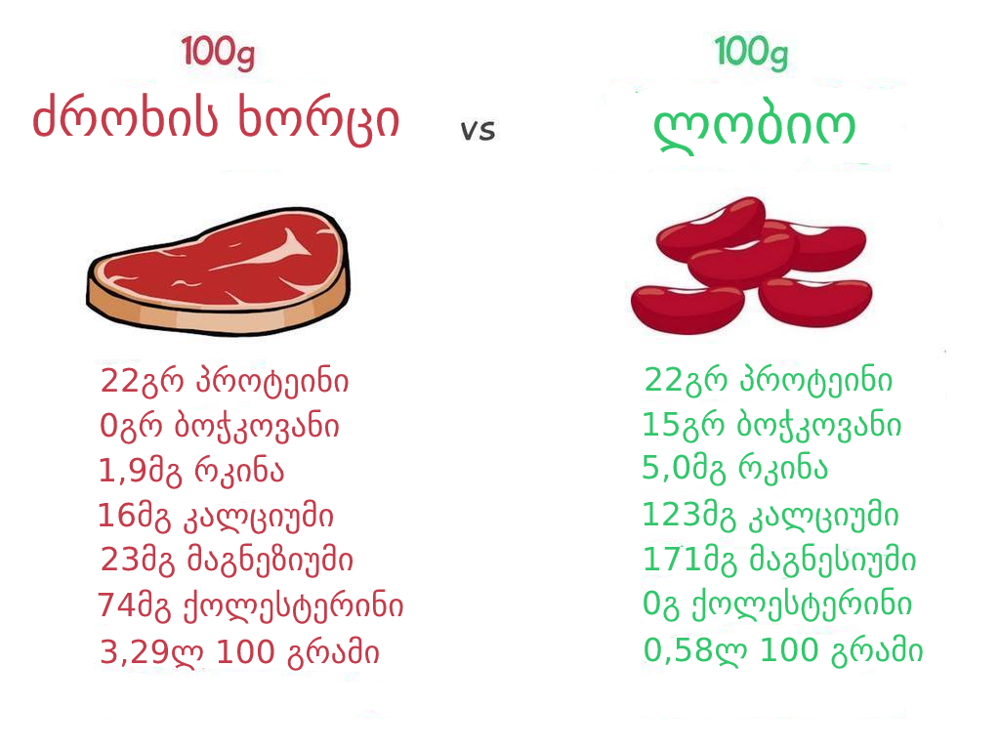
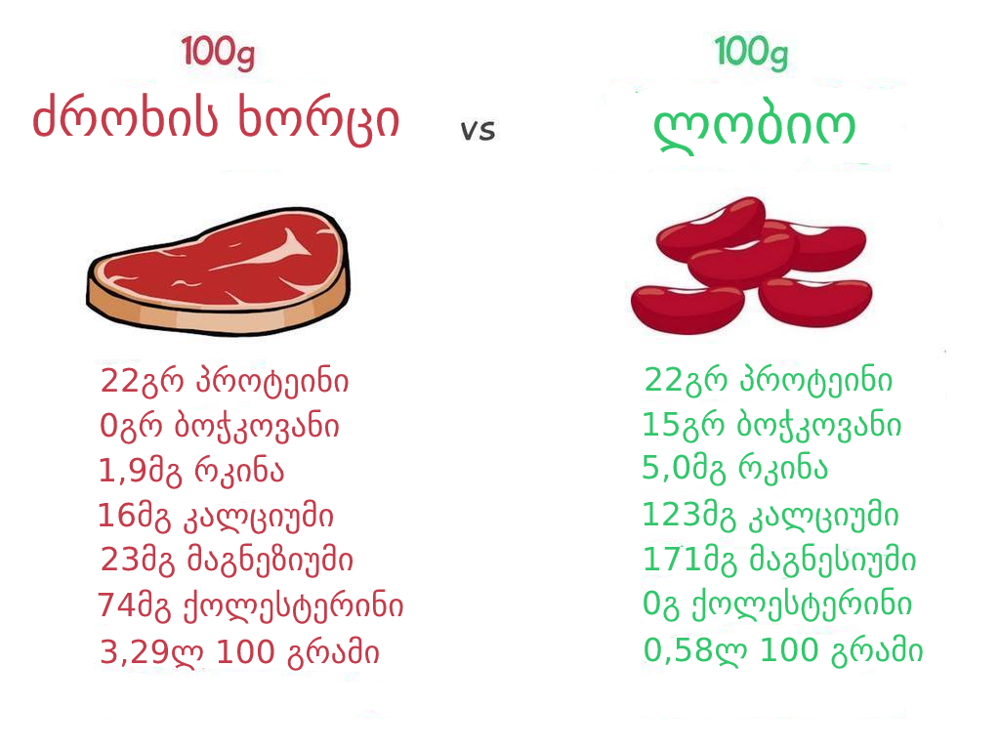
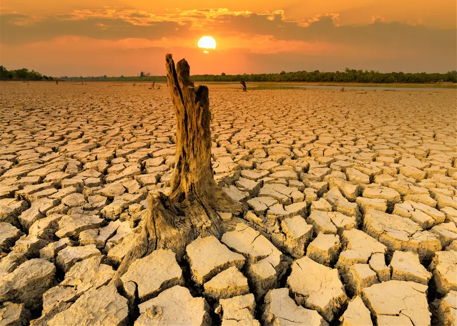
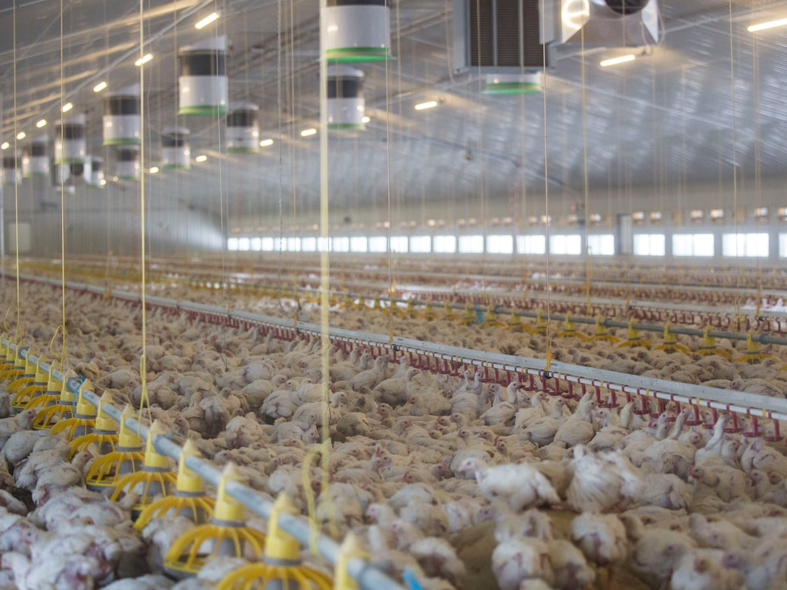
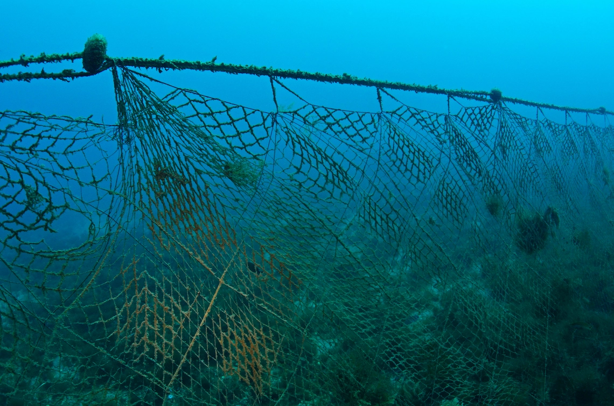

გლობალური დათბობა
როგორც თითოეული ჩვენგანი ვგრძნობთ გლობალური დათბობა ყოველწელს პროგრესირებს. მის შედეგებს კი ჩვენ ვხედავთ მაგალითად. როგორც საშვალო ასევე მაქსიმალური ტემპერატურის მაჩვენებელი, კლიმატის ცვლილების გამო გამოწველული ბუნებრივი კატასტროფები და სხვა. ეს ფაქტია და ამას ვერ გავექცევით.
მიზეზები
გლობალური დათბობა ბუნებრივი და გაცივება ბუნებრივი პროცესია დედამიწის თუმცა შესაძლებელია მისი შენელება ან აჩქარება. თუკი სამყაროში არსებულ რესურსს დავზოგავთ, არ დავაბინძურებთ ჰაერს და გავუფრთხილდებით ბუნებას ეს პროცესი საგრძნობლად შენელდება.
გარემოს დაბინძურება
გარემოს მოფრთხილება ჩვენი ვალია, რადგან შედეგი უკან დაგვიბრუნდება. ვიცით რომ უნდა დავზოგოთ სასმელი და მტკნარი წყლის რესურსი, ასევე შევამციროთ პოლიეთილენის გამოყენება. არ დავტოვოთ ნაგავი ბუნებაში. ვიხმაროთ ეკო მეგობრული ტრანსობრტი და სხვა მრავალი. თუმცა ბევრმა არიცის რომ ამ ყველა პუნქტის დაცვის მიუხედავად გარემოს ძალიან ვაბინძურებთ.
მაგლაითისთვის თუკი თქვენ დაბანისას წყალს ზოგავთ და დაბალი წნევით მომდინარე წყლ ით იბანთ ამით შესაძლოა რამოდენიმე ლიტრი წყალი დაზოგოთ თუმცაღა 100 გრამი ძროხის ხორცის შექმნა სამყაროს უჯდება 1500-1600 ლიტრამდე მტკნარუი წყალი.


რა სახის ზიანს აყენებს სხვადასხვა ცხოელური ინდუსტრიები გარემოს.
ყველა იმ სისასტიკესთან ერთად რაც ცხოველურ ფერმებში ხდება, უნდა გავითვაისწინოთ რომ იგი ამავდროულად აბინძურებს გარემოს. ხოლო ძროხის ინდუსტრია განსაკუთრებით დიდ ზიანს აყენებს გარემოს. სანამ უშვაოდ საკითხზე გადავალთ უნდა გავითვლისწინოთ რომ გარემო ზიანდება იმის გამო რომ იმაზე მეტი ძროხაა დედამიწაზე ვიდრე ნორმა, ეს კი გამოწვეულია იმის გამო რომ მოთხოვნა დღითიდღე იზრდება ხორცზე და რძის პროდუქტებზე, ეს კი პარალელურად იწვევს ფერმების ზრდას.

პირველი გასათველისწინებელი ფაქტორია ის რომ ძროხის განავალი შეიცავს მეთანს, მეთანი კი პირდაპირ კავშირშია ოზონის შრის დაზიანებაზე. ალბათ სასაცილოდ მოგეჩვენებათ როგორ შეიძლება ძროხამ დააზიანოს ატმოსფერო, თუმცა გაითვალისწინეთ რომ დღესდღეისობით 1.5 მილიარდი ძროხა ცხოვრობს დედამიწაზე, რომელბიც ყოველდღიურად გამოყოფენ მეთანს.
შესადარებლად მეთანით ატმოსფეროს ასევე აზიანებს მანქანის გამონაბოლქვი მაგრამ ძროხის ინდუსტრიასთან შედარებით სამჯერ ნაკლებად.
ამასთან ერთად ძროხის ინდუსტრიის გასაფართოვებლად მისი მფლობელები მიმართავენ სხვადასხვა მეთოდებს. მაგალითად ამაზონის ტყე ეკოსისტემისთვის ძალიან მნიშვნელოვანია, ხოლო ამაზონში ფართოდარის განვითარებული ძროხის ინდუსტრია, ტერიტორიული სიმცირის გამო სახელმწიფო უფლებას არ აძლევს ტყე გაჩეხონ და მის მაგივრად ფერმა გააშენონ, განსხვავებით სხვა ტერიტორიაზე მდებარე ფერმებისა. ამ დაბრკოლების გამო ამაზონში მყოფი ფერმერები ზაფხულობით აჩენენ ხელოვნურ რომლის ჩაქრობაც ძალიან რთულია მაღალი ტემფერატურის და მშრალი ამინდის გამო , საბოლოო ჯამში ტყის გარკვეული ნაწილი ნადგურდება. განადგურებულ ადგილას კი კანონი ხელს აღარ უშლით მოითხოვონ ფერმის გაშენება. ამით ყველა ვზარალდებით, ამაზონის ტყე დიდ როლს თამაშობს წვიმიანობის ბალანსზე სამყაროში.
 

სურათზე ნათლადჩანს თუ რამდენად განსხვავდება როგორც ფასით ასევე კვებითი ღირებულება. უნდა გავითვალისწინოთ სტატისტიკა რაცკი კაცობრიობას მოსავალი მოყავს ამის 80% გამოიყენება ცხოველების გამოსაკვებათ. საბოლოო ჯამში კი კალორიული ღირებულების მხოლოდ 18% გვაძლევს შესაბამისად მოსავლის 20% გვაძლევს კალორიების 82%. შესაბამისად თუკი მეცხოველეობას შევწყვეტთ 4,1 ჯერ მეტი საკვები გვექნება. დიახ იმ ფონზე როდესაც მოსახლეობის 20% შიმშილობს.
ამ ყველაფერთან ერთად უნდა გავითვალისწინოთ წყლის რესურსი. წყლის რესურსი ძალიან მნიშვნელოვანია ეკოსისტემისთვის, ცხოველურ ინდუსტრიაში კი ძალიან ბევრი იხარჯება. მაგალითად ავიღოტ ბურგერი ერთი შეხედვით რა რაოდენობის წყლის რესურის უნდა დაჭირდეს ბურგერის დამზადებას თუმცაღა მასში გამოყენებული პირობითად 100 გრამი ხორცის დასამზადებლად სამყარო ხარჯავს 1480 ლიტრ წყალს. ამას დამატებული ყველი და სხვა ინგრედიენტები საბოლოო ჯამში კი 1 ბურგერი სანაცვლოდ სამყარო 1800 ლიტრი წყალის კარგავს.


საბოლოოდ კი ტერიტორიები. გაგიკვირდებათ რომ გაიგოთ რა მაშტაბის ტერიტორიას იკავებს ცხოველური ფერმები. ჩვენს პლანეტაზე მიწის 20% ზე განთავსებულია სხვადასხვა ცხოველური ფერმები, რაც შეეხება მცენარეულ ფერმებს ეს იკავებს 15% და როგორც ზევით ავღნიშნეთ აქედან 80% მეცხოველეობას ემსახურება. შესაბამისად გამოდის რომ დედამიწაზე არსებული მიწის 32% მეცხოველეობას ხმარდება.
პოლიეთილენის მოხმარება რომ უნდა შევამციროთ ეს ყველამ ვიცით, იმის გამო რომ იგი დიდხანს არ გადამუშავდებ და გარემო ბინძურდება. თუმცაღა ეს ზღვაში წვეთია იმასთან შედარებით რასაც თევზაობა იწვევს. თევზაობისთვის გამოიყენება ბადეები რომლის ზომაც ძალიან დიდია ამ ბადეში თავისუფლად ჩაეტევა შვიდი სატრანსპორტო თვითმფრინავი. მათი ჩაწყვეტა კი ხშირად ხდება ის არამხოლოდ პოლიეთილენს შეიცავს და საუკუნეების განმავლობაში არ დაიშლება ამავდროულად გამუდმებით განაგრძობს თევზის ჭერას რადგან თევზები მასში ხშირად იჭედებიან და იღუპებიან. ხოლო მასშტაბები რომ აღვიქვათ თუ ბადეს რომელიც ყოველდღიურად იკარგება გავჭიმავთ დედამიწას 500ჯერ შემოერტყმევა.

საბოლოო ჯამში ვტანჯავთ ცხოველებს ვანადგურებთ გარემოს სადაც ვცხოვრობთ და ამას მხოლოდ კუჭის სიამოვნების გამო.
უფრო მეტი ინფორმაციისთვის შეგიძლიათ უყუროთ სხვადასხვა ვიდეოებს და ფილმებს